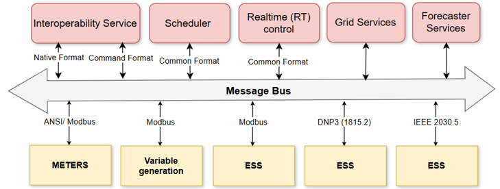
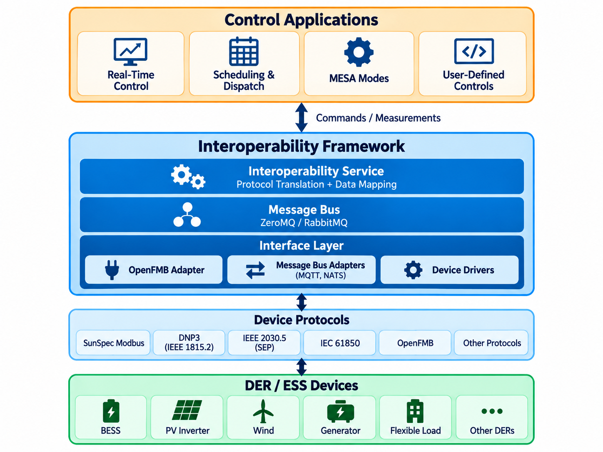

The Interoperability Framework
The Interoperability Framework, as shown in Figure 1 and described in Table 1, provides a set of open-source services and VOLTTRON agents which work together to enable seamless integration, control, and optimization of energy storage systems within a grid environment, improving operational efficiency and grid stability. All components communicate via a message bus, with the data flowing through the bus being stored in a database. Visualization of the data is achieved through Grafana. Grafana is an open-source platform for monitoring, visualizing, and analyzing metrics and log data from the various components.
At the center of the framework is the Interoperability Service, which translates the native data models and protocols of field devices (SunSpec Modbus, IEEE 1815.2/DNP3, IEEE 2030.5, IEC 61850, OpenFMB) into a common format consumed by the scheduler, real-time control, grid information, and forecaster components.

Architecture
The framework is organized in layers, as shown in Figure 2. Control applications (real-time control, scheduling and dispatch, MESA modes, and user-defined controls) exchange commands and measurements with the Interoperability Framework. Within the framework, the Interoperability Service performs protocol translation and data mapping, the message bus (ZeroMQ or RabbitMQ) carries messages between components, and an interface layer of OpenFMB adapters, message bus adapters (MQTT, NATS), and device drivers connects to DER/ESS devices over their native protocols.

| Component | Description |
|---|---|
| Interoperability Service | Provides a standard, protocol-agnostic interface to DER devices. Maps protocol-specific data models (SunSpec Modbus, IEEE 1815.2, IEEE 2030.5, IEC 61850-7-420, OpenFMB) once through a common model, using graph-based transformation pipelines to perform multi-stage conversions rather than maintaining direct mappings between every protocol pair. Decouples control applications from the underlying communication protocols. Code: interoperability-service. |
| Message Bus Adapters | VOLTTRON agent that relays data between the internal framework message bus and external OpenFMB message buses. Bus connections are provided by protocol proxies for MQTT and NATS. Topic resolution and payload transformation are delegated to the Interoperability Service. Code: message-bus-adapter, lib-protocol-proxy-mqtt, lib-protocol-proxy-nats. |
| OpenFMB Integration | Connects the framework to OpenFMB systems: message bus adapters on the OpenFMB bus, device drivers for direct device access, and identifier mapping and data-model transformations across supported protocols. Code: openfmb_der (OpenFMB test tool). |
| Scheduler Agent | Responsible for scheduling energy storage and grid operations using forecasted demand, generation, and pricing data. Integrates an optimization-based scheduler while remaining modular to support additional algorithmic approaches (including machine-learning-based scheduling), ensuring efficient energy storage and usage based on real-time grid needs and energy price variations. Code: scheduler. |
| Real-Time Control (RT) Agent | Actuates controls on energy storage systems. Designed for adaptability and efficiency in controlling grid operations in real-time. Provides native implementations of the MESA modes (active power, reactive power, and emergency modes) and novel PNNL-developed control functions (Adaptive Moving Average Control, PID, rule-based) that run the Control Evaluation Engine algorithms on real hardware. User-defined algorithms can be implemented in Python or Julia. Code: realtime-control-agent. |
| Grid Signals Agent | Provides real-time and day-ahead data on CO₂ intensity, energy generation breakdown, and pricing information (time-of-use profiles, ComEd and PJM market prices). Configurable to handle TOU pricing data for adjusting grid operations in response to market fluctuations. Code: grid-signals. |
| Forecaster Agent | Utilizes historical data from the VOLTTRON historian, a weather forecast, and a thermal model to predict future energy load and outdoor temperature conditions. Helps utilities anticipate grid needs and optimize the scheduling and operation of energy storage systems. Code: load-forecaster. |
| ES Control Integration | The Control Evaluation Engine, a Julia application implementing the real-time control and scheduling algorithms and energy storage simulators, is the shared backend of the RT Control Agent and the web-based ES-Control tool, allowing direct comparison of simulated and real-world performance. Code: ctrl-eval-engine. |
Implemented Control Modes
The applications implement the following MESA modes and PNNL-developed control functions. See MESA Modes, Novel Real-Time Control, and Scheduler for details.
| Category | Modes |
|---|---|
| Active power modes | Active Power Limiting, Charge/Discharge Storage, AGC, Active Power Smoothing, Frequency-Watt, Volt-Watt, Pricing Signal Mode |
| Active power response | Peak Limiting, Load Following, Generation Following |
| Reactive power modes | Fixed-VAR, Power Factor, Reactive Power Limit, Volt-VAR, Watt-VAR |
| Emergency modes | Dynamic Reactive Current Support, Voltage Emergency, Frequency Emergency |
| Scheduling modes | Optimization based, ML based |
ES Control Integration
The real-time control and scheduling algorithms are implemented in the Control Evaluation Engine, the shared backend of the Real-Time Control Agent and the web-based ES-Control energy storage control tool. Because the same algorithm implementations run in simulation and on real hardware, the performance of a control strategy on a simulated energy storage system can be compared directly against its real-world performance. See ES Control Integration.
For more information and experimentation results, read the article: Interoperable Energy Storage Control and Communication Framework Development